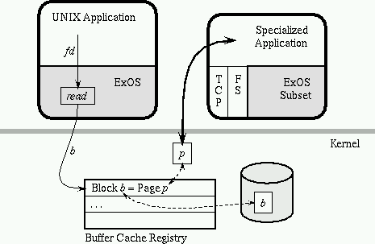
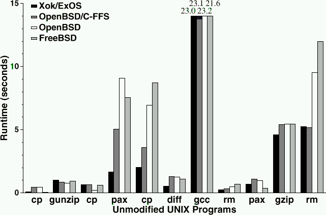

The LibOS, EX/OS
This OS give applications control over resources. Each application manages its own disk blocks but allows sharing across apps. Exos protects pages and blocks but the apps manage them.
The LibOS’s allow incremental changes to the OS within the apps. Any programmer can specialize a LibOS with out affecting the rest of the system, they link with what they need, new OS functionalities are distributed with the application binary.
While Linux allows only trusted dynamically loaded code, EX/OS leaves decisions to the software.

Cheetah, 8 factors faster than NCSA on BSD,

XN, gives access to stable storage structures by using UDF’s ( Untrusted Determinalistic Functions ) which are stored in templates. They correspond to particular metadata formats. The UDF is as expressive interperated language. Lib F/S’s track their own rights and verify block ownership.
UNIX Implementation
Process are mapped using shared tables.
Forking does the usual copying or over writing.
IPC includes all the usual primitives
Files descriptors are the small integers used to access files, sockets, etc.
Exploting Extensibility
XCP is a factor of 3 times faster in copying files because granular changes were allowed to be made to the access primitives
CHETTAH:
Merged File Cache and Retransmission Pool. Cheetah avoids all in-memory data touching (by the CPU) and the need for a distinct TCP
retransmission pool by transmitting file data directly from the file cache using precomputed file checksums (which are stored with each
file). Data are transmitted (and retransmitted, if necessary) to the client directly from the file cache without CPU copy operations
Knowledge-based Packet Merging. Cheetah exploits knowledge of its per-request state transitions to reduce the number of I/O actions it
initiates. For example, it avoids sending redundant control packets by delaying ACKs on client HTTP requests, since it knows it will be
able to piggy-back them on the response
HTML-based File Grouping. Cheetah co-locates files included in an HTML document by allocating them in disk blocks adjacent to that
file when possible. When the file cache does not capture the majority of client requests, this extension can improve HTTP throughput by
up to a factor of two.